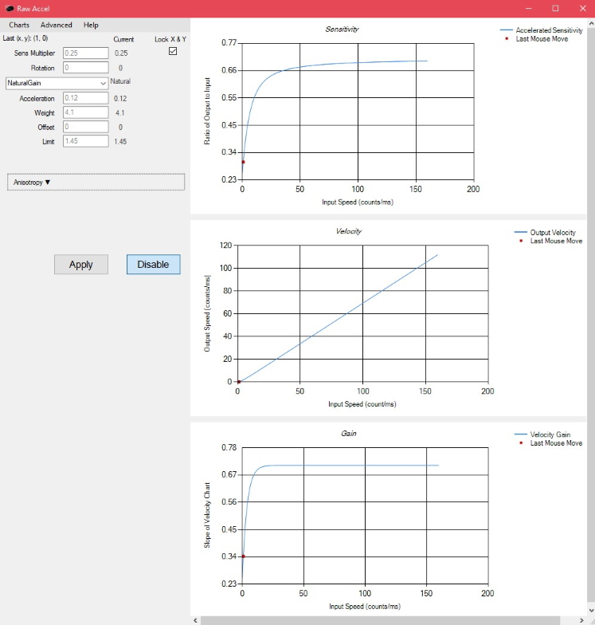

This website is a great tool for checking the frame data of moves from
Super Smash Brothers, an old platform-fighter videogame on the Nintendo 64.
This website plays video for every relevant attack in the game.
Every Noise at Once is a music genre mapping website, that is meant
to show a mapping of many musical genres and subgenres. The website is a
great place to fine new music!
RawAccel is a program that changes mouse sensitivity depending on how fast the mouse is moving.
This is done by feeding inputs through a custom input driver that manipulates raw input.
RawAccel is the best mouse acceleration program due to its compliance with anti-cheats as well as its customizability.
